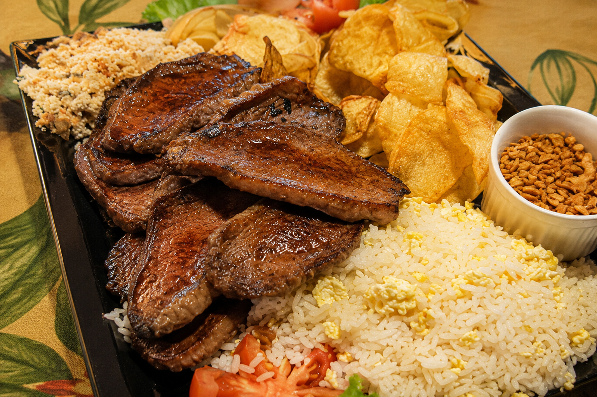

NA BRASA
Churrasco
Cortes preparados com cuidado, sabor e personalidade.
A TRADIÇÃO DA SERRA
Churrasco, pizzas e fondue preparados para reunir famílias, celebrar bons momentos e tornar especiais as noites na serra.
OLICIO'S EM TERESÓPOLIS
Há décadas, o Olicio's recebe gerações de teresopolitanos e visitantes com o acolhimento de uma casa da serra. Aqui, cada refeição é um convite para ficar mais um pouco.
O COMEÇO DE TUDO
Em 1988, o Olicio's abriu as portas de uma casa que nasceu para receber bem. Entre a brasa acesa, o forno quente e as noites de fondue, o restaurante cresceu junto com Teresópolis e se tornou cenário de encontros que atravessam gerações.
Hoje, a família mantém vivo o mesmo cuidado: servir com generosidade, preservar sabores marcantes e fazer cada visita parecer um reencontro. Mais do que uma mesa, o Olicio's guarda histórias e continua criando novas todos os dias.
AO LADO DA GRANJA COMARY
O Olicio's fica ao lado da sede oficial da Seleção Brasileira, um ponto de encontro acolhedor para quem vive a paixão pelo futebol, pela serra e pela boa mesa.
CELEBRAÇÕES COM A NOSSA ASSINATURA
Realizamos eventos internos, em nosso restaurante, e também eventos externos, levando buffet, estrutura e equipe até você. Casamentos, churrascos, coffee breaks, feijoadas, festas de 15 anos e festas infantis recebem todo o cuidado e o sabor do Olicio's.
VENHA AO OLICIO'S